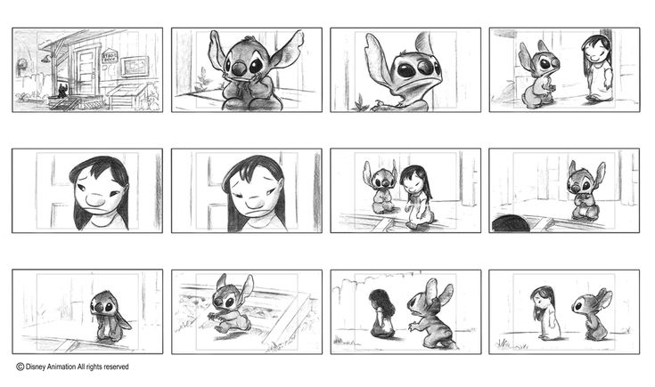

Kunst der Animation (Von Colin Güldenbeck)
Enstehung
Die Animationsbranche wie wir sie kennen hat einen weiten Weg hinter sich ,denn Die Zeichentrickfilmindustrie begann ungefähr nach dem ersten Weltkrieg so richtig,weil die Filmindustrie immer grösser wurde mit grossen Firmennamen wie Warner.bros oder Walt disney studios wurde alles immer grösser.Man kann Walt disney in dem Fall noch besonders hoch heben ,weil er mit seinem Animationstudio sehr viel beigetragen hat. Er hat mit seinem Team zum Beispiel sehr viele Figuren erfunden welche wir heute immer noch kennen wie zum beispiel Mickey Mouse.

Wie funkzioniert eine Animation?
Eine Animation ist im Grunde nichts weiter als eine Ilusion welche dadurch entsteht das man viele Bilder schnell hintereinander abspielt.Das Gehirn nimmt diese Bilder wenn sie zu einander passen als eine Bewegung war. Damit eine Animation für den Verstand flüssig erscheint müssen mindestens 12 Bilder in einer Sekunde gezeigt werden ,der Fachbegriff dazu lautet Frames Per Second oder auch FPS. das hat ,aber leider zufolge das ein neunzig minütiger Zeichentrickfilm ungefähr 64.800 bilder haben muss.
können sie hier an der Darstellung sehen


Die Animations Pipeline
Die Animation Pipeline ist so zusagen eine art Plan der genutzt wird um um einen animations Film oder Serie zu machen.Denn um eine vollständige Animationsserie zu machen würde es ungefähr 2 Jahre dauern .Die Pipeline wird dabei in mehrere Aufgaben geteilt die zur gleichen Zeit ausgeführt werden.
- Die Drehbuchschreiber sind einr der ersten Teile der pipeline denn schliesslich schreiben sie ja die Geschichte(danach wird natührlich auch das Skript geschrieben),zur selben Zeit werden übrigens auch die Charackterdesigns gemacht.
- Dannach wird das Storyboard gezeichnet welches sehr simple gezeichnet und animiert ist ,weil es nur dafür gemacht wird um zu viesualisieren. Es ist technisch gesehen eine art Comic . 
- Und dannach kommt das Animationsteam und das Edeting.
Natührlich waren das nicht alle Abschnitte der Pipeline ,aber über alle zu reden würde ganz klar den Ramen sprengen
Die Stock Motion Animation
Eine andere Art der Animation ist die Stock Motion Animation welche etwas anders funkzioniert.Denn in der Stock Motion Animation werden reale Gegenstände und figuren benutzt und von diesen Figuren macht man ein Foto und bewegt sie etwas und man macht dann noch ein Foto
Hier das Video erklärt es tausend mal besser
Wie man sehen kann wird die Bewegung des Bären dadurch erzeugt das mehrere Figuren benutzt und ausgetauscht werden.
Was braucht man für eine Zeichenanimation ?
In diesem letzten Teil der Website werde ich versuchen so gut wie möglich zu erklären wie man Zeichentrickanimation macht.(Falls meine Erlärung nicht ausreicht gibt es später noch ein Totorialvideo )
Was ihr braucht?
- Ihr braucht entweder ein Zeichentablet oder einen Computer mit einem Zeichenpad mit einem Stift ihr könnt es natührlich auch mit einer Maus machen,aber viel Glück.
- Dazu braucht ihr noch ein gutes Animationsprogram ich würde für Anfänger das Program Flipa Clip empfehlen,denn dort ist alles sehr Anfängerfreundlich.
- Und es is natührlich auch wichtig ein klein wenig Erfahrung im Zeichnen zu haben.
Bevor man wircklich mit dem animieren anfangen kann solte man davor lieber seine Animation planen vieleicht irgndwo aufschreiben oder zeichnen.Im grunde könnt ihr einach ein klenes Storyboard machen.
 Tips und Tricks
Tips und Tricks
Einer der Tricks die einem stark beim animieren helfen können ist das quetschen und ziehen von Charackteren und Gegenständen,denn animierte Sachen haben meisstens nicht die selben Proportionen wie reale Gegenstände. Wie man hier an der Darstellung sehen kann.

Ein weiterer Tip den ein Anfänger wissen sollte ist das man damit eine Animation schneller ist auch weniger Bilder nutzen muss, das kann man hier an der Darstellung sehen kann.Wie man sehen kann ist der Ball am anfang noch schnell weil weniger Bilder genutzt werden .Doch am Höhepunkt seines Sprungs werden dann mehr genutzt.

Dieser Tip kann einem helfen seine Animationen deutlicher zu machen .Wenn zum Beispiel ein Charackter etwas aus seiner Tasche holt muss das deutlich zu erkennen sein ,denn ansonsten wirkt es so als würde der Charackter den Gegenstand plötzlich auch dem nichts holen.

Das ist zwar ein sehr offensichtlicher Tip,aber ich erwähne es trotzdem mal.Benutzt die Zwiebelschichten,denn so kann man viel besser animieren.
Mein letzter Tip hilft sehr stark bei Anfängern.Nähmlich muss man beim animieren immer auf die Perspektive achten ,denn Anfänger neigen dazu alles recht 2d zu zeichnen und darauf muss man achten,den es gibt viel mehr Möglichkeiten.

Wie man sehen kann ist diese Animation mehr 3d.Man kann so einen Efekt besser erzeugen wenn man den Boden und die Wände in der Perspektive vorzeichen.
Und wie versprochen ist hier ein Video welches ein paar mehr Tips gibt.
Dankeschön
Ich bedanke mich herzlich bei allen welche wircklich bis hier hin gelesen haben. ich habe diese Website damals 2022 einfach nur aufgrund eines Praktikums gemacht und bin Stolz auf das Ergebnis. ich hoffe natührlich das ihr Spass hattet das hier zu lesen und ich hoffe auch das ihr wenigstens ein bisshen was über Animationen gelernt habt. Ihr könnt mit Animationen immer recht viel machen und eurer Krativität freien lauf lassen und falls ihr mal wegen Animationen einen Emy gewinen solltet,dann vergiesst nicht diese Website.